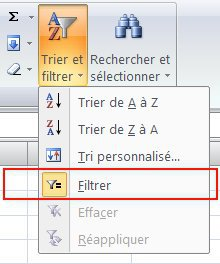

Base de donnée composants informatiques
Introduction
Un tableau Excel peut-être utilisé comme base de données,
afin de traiter ses données ou de faire ressortir certains résultats,
l'utilisation de formule comme la RechercheV ou les fonctions de tri vont être indispensable
Objectifs
Manipuler une base données sur Excel
Créer des listes de validation de données
Utiliser les fonctions de tri
Faire interagir plusieurs feuille de calcul dans un même classeur
Utiliser la fonction : RechercheV
Ressources
Consignes _ Récupération de base
Récupérer le fichier contenant la base de donnée de composants sur le lien ci-dessous :
Consignes _ Créer une liste déroulante
A partir de la feuille "Type de composants", créer une liste déroulante dans la colonne "Type" de la feuille "bdd_composants". Puis attribuer le bon "Type" à chaque composants à l'aide de la liste déroulante. |
Activer ensuite les fonctions de Tri et Filtre |  |
Consignes _ Utiliser la RechercheV
Créer une nouvelle feuille de calcul nommée "RechercheV" Mettre en forme un tableau et utiliser la liste déroulante et la RechercheV comme dans l'image ci-contre. |
Pour aller plus loin
En regardant le tutoriel ci-dessous, créer un tableau croisé dynamique à l'aide de votre base de données de composants, puis manipuler les champs dans les zones voulues afin de trier les types de composants, ceci afin de ne faire ressortir que les "Processeurs" avec leur "Marques" et leur "Prix". |
Vous pouvez passer à l'exercice suivant.